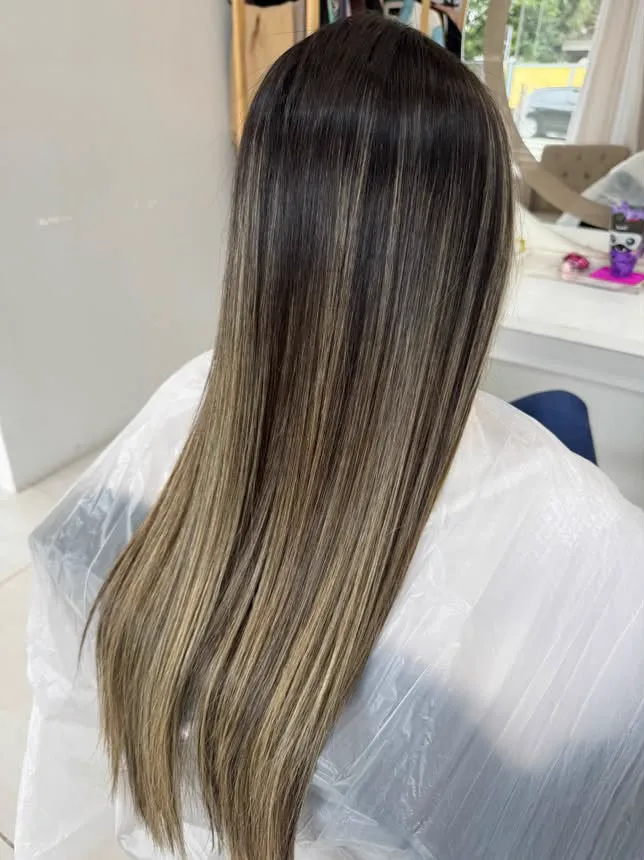
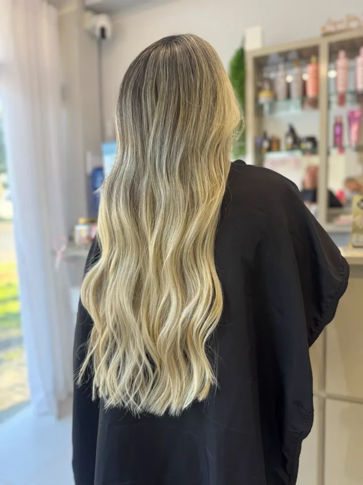
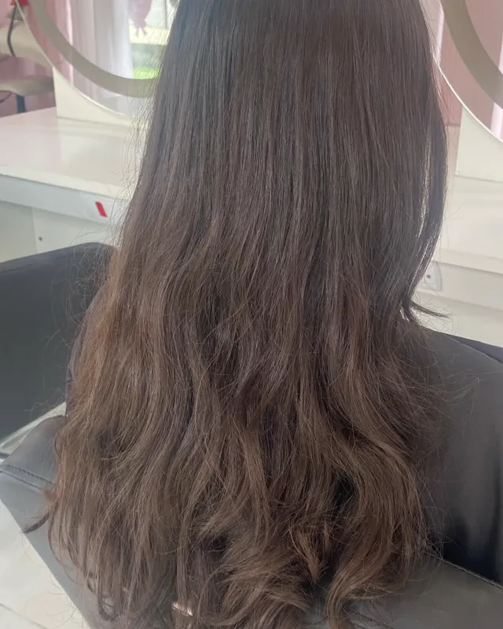
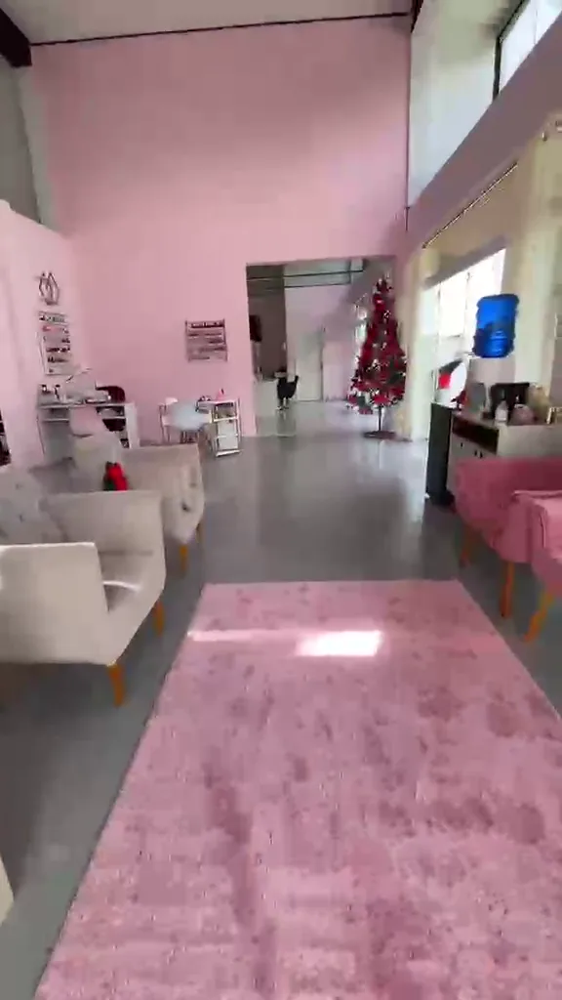

Onde sua beleza se torna digna de princesa
Especialista em loiros, com cabelo, unhas, cílios, sobrancelhas e micropigmentação em um só lugar. Escolha o serviço, veja os horários livres e agende em menos de 1 minuto.
- Especialista em loiros
- Agenda online
- Rua Roraima, 1557

Agendamento online em 3 passos
A agenda mostra só os horários em que o seu atendimento cabe inteiro, sem esperar resposta.
- Escolha o serviçoPode escolher mais de um. O tempo e o valor somam na hora.
- Veja os horários livresA agenda calcula pelo tempo médio de cada serviço.
- Confirme no WhatsAppA mensagem chega pronta. É só enviar.

Cabelo, unhas, cílios e sobrancelhas
Preço inicial de cada área. Toque para ver todos os serviços e o tempo de cada um.
- LoirosTruck, Blonde Hair, Blonde Premium e Mechasa partir de R$ 400,00
- Hair careProgressiva, botox, corte e cronogramasa partir de R$ 90,00
- NailsManicure, pedicure, fibra, gel e molde F1a partir de R$ 10,00
- LashLash lifting e extensão de cíliosa partir de R$ 120,00
- Beauty careSobrancelhas, henna e maquiagema partir de R$ 30,00
- MicropigmentaçãoSobrancelhas, lábios e olhosa partir de R$ 320,00

Loiros sob medida para você
Do iluminado suave ao platinado, cada técnica é pensada para o seu tom de pele e a saúde dos fios. Todo loiro sai com reconstrução ou botox incluso.
- Mechas Iluminadas30 a 50% de preenchimento
- Truck50%, contorno em topo
- Blonde Hair50 a 70% de preenchimento
- Blonde Premium70 a 90% de preenchimento


Antes e depois no studio
Arraste a linha no meio da foto: à esquerda o antes, à direita o depois.



O studio no Cajuru
Um studio intimista no Cajuru, onde cada cliente é atendida com calma e carinho, do café ao resultado final.
Curitiba – PR
WhatsApp e agendamentos



Dicas para a sua beleza
Ver todos os artigos
Loiro que dura: 7 cuidados para manter o seu loiro lindo em casa
Matizador na medida, cronograma capilar e proteção térmica: o passo a passo para o loiro continuar iluminado até o próximo retoque.
Ler artigo
Botox ou reconstrução: qual tratamento o seu loiro precisa?
Entenda a diferença entre os dois tratamentos, faça o teste do fio em casa e descubra o que o seu cabelo está pedindo.
Ler artigo
Extensão de cílios: volume brasileiro ou egípcio?
Veja a diferença entre os volumes, quanto tempo dura a extensão e os cuidados para os fios ficarem lindos por mais tempo.
Ler artigo